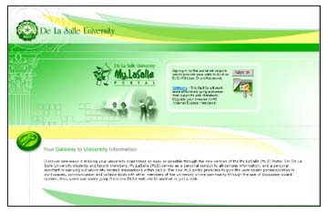

Documentation Office
: Updates
MLS Portal Update
by:
Precious Anne L. Taliwaga
The My.Lasalle (MLS) Portal continues to take better shape.
The most recent additions to the portal are the comprehensive
accessories which now includes the DLSU Library Web On-line
Public Access Catalog (OPAC), www.google.com, www.yehey.com.ph,
www.dictionary.com, www.inq7.net, www.cnn.com links, links
to government electronic services, Quality Articles posted
under lifelong learning, calculator and periodic table of
the elements, at default.

Helpdesk Web Site
by:
Precious Anne L. Taliwaga
The launch of the reorganized and redesigned Help Desk web
site is something to look forward to. Together with other
recently-launched web sites, the Help Desk web site uses CSS
layouts. CSS web design uses no tables for design and thus,
makes load time faster and has the ability to change designs
on the fly just by changing the CSS of the website. These
technologies make the design, enhancement and maintenance
of the web site easier. As a result, there are three (3) designs
and color schemes to choose from. The major links are now
Services, Tips and Tools, Downloads, Facilities, FAQs, DLSU
Sites and About.
PSI Web Site
by:
Precious Anne L. Taliwaga
In line with the Philippine Accrediting Association of Schools,
Colleges and Universities (PAASCU) re-assessment of the College
of Computer Studies (CCS), the redesigned ITC-PSI web site
has been launched last November. The web developers utilized
WYSIWYG templates that allow easier content development and
maintenance.
Planning Sessions
by:
Precious Anne L. Taliwaga
The DOCU Office recently concluded the planning workshop
for the school year 2004-2005. After three (3) sessions, new
threats and opportunities posed by conditions outside of ITC
and DLSU have been identified in the TOWS Analysis. A more
detailed and comprehensive proactive action plan has been
finalized. Upon the implementation of the action plan, delivery
of information over the Internet is foreseen to be more accurate,
up-to-date and accessible.
Faculty Web Site
by:
Precious Anne L. Taliwaga
Full professors who are employed by the university full-time
can now avail of web development services. At the very least,
full professors have a doctoral degree to their credit except
in fields where doctoral programs are not available locally.
The guidelines have already been set by the DOCU Office as
approved by ITC Director Samuel Mallare. The web page for
the guidelines is currently being developed. To make the academic
community aware of this service, an article will be published
in the DLSU Newsletter.
CeMTRE Web Site
by:
Precious Anne L. Taliwaga
Supporting DLSU’s mission to be the leading research
university in the Southeast Asian region, La Salle tied up
with the Philippine government’s Department of Energy
(DOE) and Japan International Cooperation Agency (JICA). The
web site for Center for Micro-Hydro Technology for Rural Electrification,
CeMTRE,
was established to upgrade the existing hydraulic laboratory
test facilities for micro-hydro technologies at the College
of Engineering.
Published Articles
by:
Precious Anne L. Taliwaga
To inform the users of the newest services offered by the
Information Technology Center (ITC), the DOCU Office submitted
articles which have been published in the printed edition
of the DLSU Newsletter. These articles informed the public
of the importance of the web in information dissemination,
the accessibility of downloadable forms, and the availability
of the software PDF995 and Statistica. On-line information
about these topics can be found in the different web sites
where they belong.
|